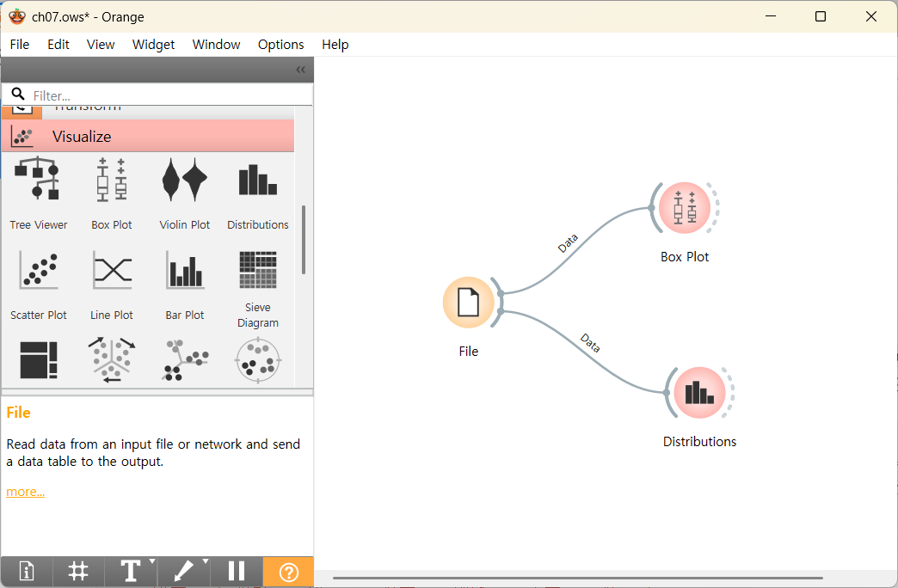
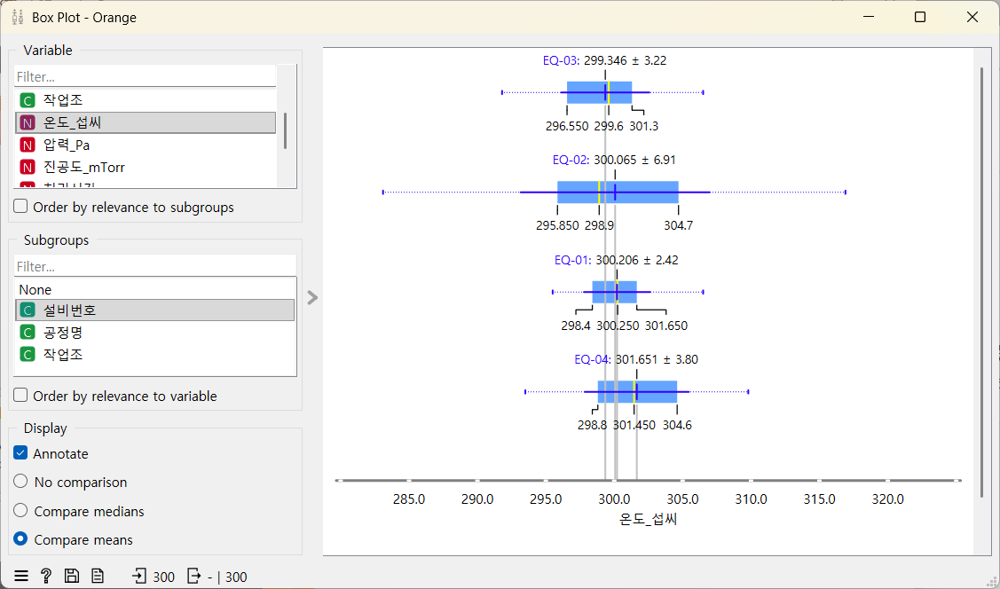
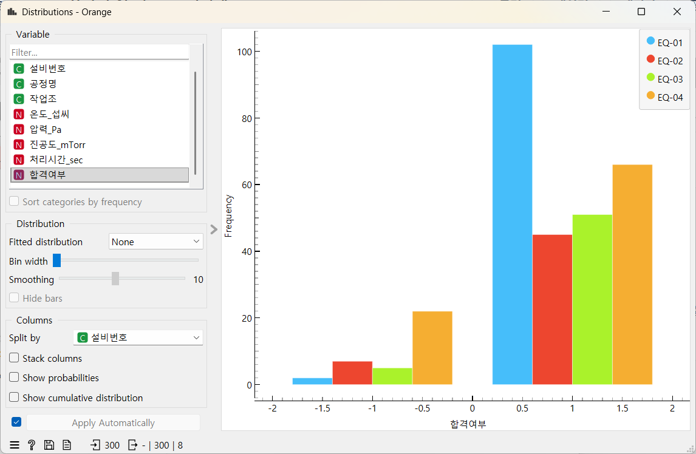
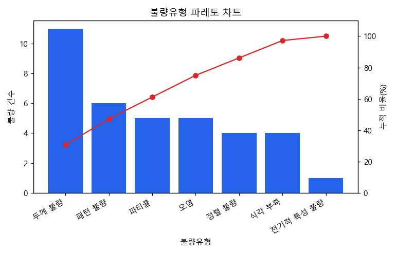

설비·공정 비교와 수율·불량 분석
오늘의 질문: "설비마다 차이가 있어 보이는데, 숫자로 계산해도 정말 그럴까?"
학습 목표
- 수율과 불량률이 "무엇 중에 무엇의 비율"인지 내 말로 설명하고 계산할 수 있다.
- 데이터를 설비별로 "묶어서" 비교해야 하는 이유를 실제 수치로 설명할 수 있다.
groupby로 설비별·로트별 개수, 합격률, 평균을 계산할 수 있다.- 불량 유형을 많은 순으로 줄 세우고, 눈에 띄는 설비를 "원인"이 아니라 "원인 후보"로 말할 수 있다.
- 선수 지식 — 1차시: 여러 열 함께 보기·원인 후보 / 4차시: 조건 검색 / 5차시: True를 1로 세기(
sum()) / 6차시: 박스플롯·막대그래프
왜 이걸 배워야 할까?
- 공장에서 가장 자주 나오는 질문은 "어느 설비를 먼저 점검해야 하지?"다. 이 질문에 답하려면 기록을 설비별로 묶어서 서로 비교해야 한다.
- 전체를 한꺼번에 보면 괜찮아 보여도, 나눠 보면 한 곳만 유독 나쁜 경우가 많다.
오늘은 그 "나눠 보기"를 코드로 한 줄에 하는 법(
groupby)을 배운다.
- 웨이퍼 300장 중 264장이 합격했다. 합격률 88.0%. 이것만 보면 "그럭저럭 괜찮네"로 끝난다.
- 설비 4대로 나눠 보면 EQ-01 98.1%, EQ-03 91.1%, EQ-02 86.5%, EQ-04 75.0%다. EQ-04는 4장 중 1장꼴로 불합격이다. 전체 숫자 88.0% 안에 이 차이가 숨어 있었다.
지난 시간 복습
- 1차시: 강사가 미리 세어 둔 "공정명별 불합격 표"를 보며 여러 열을 함께 보면 질문이 생긴다는 것, 그리고 눈에 띄는 것은 범인이 아니라 용의자(원인 후보)라는 것을 배웠다. 오늘은 그런 표를 직접 계산한다.
- 6차시: 박스플롯으로 "EQ-02의 온도가 유독 넓게 퍼져 있다"는 것을 그림으로 봤다. 그림은 인상을 주지만 정확한 숫자는 주지 않는다. 오늘은 인상을 숫자로 바꾼다.
오늘 데이터 다시 보기 — 열마다 공장에서 뜻하는 것
파일은 week07_equipment_yield.csv(300행 11열)다. 웨이퍼 4장씩 담은 로트 75개를 검사한 기록이다.
교육용으로 만든 가상 데이터이며 실제 회사의 생산 기록이 아니다.
| 열 이름 | 공장에서 뜻하는 것 | 생활 속 비유 |
|---|---|---|
로트번호 | 함께 옮기고 관리한 웨이퍼 묶음의 번호. 실제 공장의 로트는 보통 25장 안팎이고, 이 데이터는 연습용으로 한 묶음에 4장이다 | 택배 상자 송장 번호 |
웨이퍼번호 | 로트 안에서 몇 번째 웨이퍼인지(1~4) | 상자 안 물건 순번 |
설비번호 | 작업한 기계(EQ-01~EQ-04) | 같은 메뉴를 만드는 가게 지점 |
공정명 | 어떤 작업이었는지(산화·포토·식각·증착·세정) | 요리의 썰기·굽기·씻기 |
작업조 | 그 시간에 근무한 교대 근무팀(A·B·C조) | 오전·오후·야간 근무팀 |
온도_섭씨 · 압력_Pa · 진공도_mTorr | 설비 안 센서가 잰 값(진공도는 공기를 얼마나 빼냈는지 나타내며 값이 낮을수록 공기를 더 많이 뺀 상태, 즉 진공에 가깝다. mTorr는 아주 낮은 압력 단위) | 체온계·혈압계 숫자 |
처리시간_sec | 작업에 걸린 시간(초) | 조리 시간 |
불량유형 | 불합격일 때 어떤 종류의 불량인지. 합격이면 빈칸(NaN) | 반품 사유 |
합격여부 | 검사 결과. 1 = 합격, -1 = 불합격 | 상품 / 불량품 판정 |
불량 유형은 이름이 낯설 수 있다. "무엇이 잘못됐는지" 정도만 알면 충분하다.
| 불량 유형 | 쉬운 뜻 |
|---|---|
| 두께 불량 | 쌓은 막이 정해진 두께보다 너무 두껍거나 얇다 |
| 패턴 불량 | 새긴 회로 무늬의 모양이 틀어졌다 |
| 파티클 | 공정 중 들어온 아주 작은 이물 알갱이가 붙었다 |
| 오염 | 있으면 안 되는 물질이 표면에 묻었다 |
| 정렬 불량 | 위아래 층의 무늬 위치가 서로 어긋났다 |
| 식각 부족 | 깎아내야 할 부분이 덜 깎였다 |
| 전기적 특성 불량 | 전기를 흘려 검사했더니 기준을 벗어났다 |
불량 유형은 검사에서 발견된 불량의 종류일 뿐이다. 그 줄의 공정(예: 증착)에서 그 불량이 생겼다는 뜻은 아니다.
수율과 불량률 — 사과 100개 중 상품 92개
- 과수원에서 사과 100개를 땄는데 92개는 팔 수 있는 상품이고 8개는 흠집이 났다고 하자.
- 수율 = 상품 92개 ÷ 딴 사과 100개 × 100 = 92%
- 불량률 = 흠집 난 8개 ÷ 딴 사과 100개 × 100 = 8%
- 핵심은 "무엇 중에 무엇"이다. 수율은 "만든(검사한) 것 중에 정상 제품"의 비율이다. 분모(나누는 수)를 빼고 "수율 92"라고만 말하면 뜻이 사라진다.
- 오늘 데이터: 웨이퍼 300장 검사 → 합격 264장, 불합격 36장.
- 합격 비율 = 264 ÷ 300 × 100 = 88.0% / 불합격 비율 = 36 ÷ 300 × 100 = 12.0%
- 모든 웨이퍼가 합격 아니면 불합격 둘 중 하나라서, 두 비율을 더하면 100%가 된다. (재검사·보류 같은 판정이 섞이는 현장에서는 꼭 그렇지 않다.)
- 실제 공장의 수율은 웨이퍼 한 장 안의 칩(다이)을 하나하나 세는 경우가 많다. 오늘 데이터는 웨이퍼 1장 = 검사 1건으로 단순화했다.
- 그래서 웨이퍼를 설비별로 센 비율은 합격률, 로트(4장 묶음)별로 센 비율은 로트 수율이라고 부른다. 둘 다 "양품 ÷ 검사한 것 × 100"으로 계산하는 방식은 같다.
왜 묶어서 비교할까 — 전체 평균 속에 숨은 차이
오늘 데이터로 확인하면 이렇다(아래 코드로 직접 계산한다).
| 보는 단위 | 처리한 웨이퍼 | 합격 | 합격률 |
|---|---|---|---|
| 전체(한꺼번에) | 300장 | 264장 | 88.0% |
| EQ-01 | 104장 | 102장 | 98.1% |
| EQ-02 | 52장 | 45장 | 86.5% |
| EQ-03 | 56장 | 51장 | 91.1% |
| EQ-04 | 88장 | 66장 | 75.0% |
- 전체 88.0%라는 숫자 하나에는 "98.1%짜리 설비"와 "75.0%짜리 설비"가 섞여 있다.
- 묶어서 나눠 보는 순간 "EQ-04부터 살펴보자"라는 다음 행동이 생긴다. 이것이 묶어서 비교하는 이유다.
왜 여러 열을 같이 볼까 — 열 하나만 보면 놓치는 것
같은 300줄이라도 어떤 열과 함께 보느냐에 따라 보이는 것이 달라진다. 오늘 실습에서 하나씩 확인할 내용을 먼저 정리했다.
| 함께 본 열 | 보이는 것 | 이 열만 봤다면 |
|---|---|---|
합격여부 하나만 | 300장 중 264장 합격(88.0%) | "괜찮다"로 끝난다 |
+ 설비번호 | EQ-04만 75.0%로 가장 낮다 | 문제 설비를 못 찾는다 |
+ 온도_섭씨 | 설비별 평균 온도는 299.3~301.7℃로 서로 비슷하다 | 평균 온도만으로는 EQ-04가 눈에 띄지 않는다 |
+ 로트번호 | EQ-04의 로트 22개 중 11개는 수율 100%다 | "EQ-04는 늘 나쁘다"고 오해한다 |
+ 불량유형 | 불량 36건 중 두께 불량이 11건으로 가장 많다 | 무엇부터 줄일지 모른다 |
비교할 때 조심할 점
1. 개수가 아니라 비율로 비교한다
- 설비마다 처리한 웨이퍼 수가 다르다. EQ-01은 104장, EQ-02는 52장으로 두 배 차이다.
- 손님이 두 배 많은 지점은 불만 건수도 많아지기 쉽다. 그래서 "불만 건수"가 아니라 "손님 100명당 불만"으로 비교한다. 설비도 불합격 "장수"가 아니라 "비율(합격률)"로 비교한다.
2. 건수가 적은 쪽의 비율은 흔들리기 쉽다
- 리뷰 2개에 별점 5.0인 가게와 리뷰 500개에 별점 4.7인 가게 중 어느 쪽 맛을 더 믿을 수 있을까? 리뷰가 2개뿐이면 한 명만 낮은 점수를 줘도 별점이 크게 바뀐다.
- 오늘 데이터에서도 같다. 불합격이 딱 1장 늘었다고 해 보자.
- EQ-02(52장): 45 ÷ 52 = 86.5% → 44 ÷ 52 = 84.6%. 약 1.9%p 떨어진다.
- EQ-01(104장): 102 ÷ 104 = 98.1% → 101 ÷ 104 = 97.1%. 약 1.0%p 떨어진다.
- 장수가 적을수록 1장의 무게가 크다. 비율 옆에 몇 장 중에서 나온 비율인지를 꼭 함께 적는다.
3. 눈에 띈다고 바로 "원인"이라고 말하지 않는다
- EQ-04의 합격률이 가장 낮다고 해서 "EQ-04가 불량의 원인이다"라고 단정할 수는 없다. EQ-04에 원래 까다로운 작업이 몰렸을 수도 있고, 특정 로트만 문제였을 수도 있다.
- 지금 말할 수 있는 것은 "EQ-04를 원인 후보로 더 살펴볼 만하다"까지다. 1차시 비유로는 범인이 아니라 용의자다. 용의자를 좁히는 방법은 8차시에서 더 배운다.
groupby — 같은 이름표끼리 모아서 바구니마다 계산
groupby는 표에서 같은 이름표(값)를 가진 줄끼리 한 바구니에 모은다.- 그다음 바구니마다 계산한다. 평균은
mean(), 개수는count(), 합계는sum(). - 모으기만 하고 계산을 붙이지 않으면 숫자가 나오지 않는다. 바구니만 놓고 아무것도 안 한 상태다.
toy.groupby("반")["점수"].mean()이 하는 일. "반"이라는 이름표로 모으고(②), 바구니마다 점수 평균을 낸다(③).
오늘은 이름표 자리에 "설비번호", "로트번호"를 넣는다.
df.groupby("설비번호")["합격"].mean()은 왼쪽부터 이렇게 읽는다.
"표 df를 → 설비번호가 같은 줄끼리 모아서 → 바구니마다 합격 열의 → 평균을 구하라."
파레토 차트 — 많은 것부터 줄 세우기
- 불량 유형을 건수가 많은 순서로 줄 세우면, 대개 맨 앞 몇 개가 전체의 큰 몫을 차지한다.
- 오늘 데이터: 불량 36건, 유형 7가지. 그중 상위 3가지(두께 불량 11 + 패턴 불량 6 + 파티클 5 = 22건)가 22 ÷ 36 × 100 = 약 61.1%다. 7가지 중 3가지가 불량의 절반 넘게 차지한다.
- 그래서 "어디부터 손댈까?"의 답이 쉬워진다. 줄의 맨 앞(두께 불량)부터다.
- 이렇게 많은 순서로 세운 막대그래프에, 앞에서부터 차곡차곡 더한 비율(누적 비율)을 선으로 겹친 그림이 파레토 차트다.
Orange3로 먼저 훑어보기
- 코드를 쓰기 전에 Box Plot으로 설비별 온도 분포를, Distributions로 설비별 합격/불합격 개수를 먼저 본다.
- Distributions에서 Variable을
설비번호, Split by를합격여부로 고르면 설비마다 합격/불합격 막대가 색으로 나뉜다. 합격여부는 1/-1 숫자라서 File 위젯에서 Type을 categorical(범주)로 바꿔야 Split by 목록에 나타난다.
- 위젯 사용법 — 부록: Orange3 시작하기
- 보면서 짐작해 보기: 불합격 막대가 상대적으로 커 보이는 설비는 어디인가? 막대의 전체 높이(처리한 장수)가 설비마다 같은가?



- 그림으로 받은 인상은 "짐작"이다. 아래에서
groupby로 정확한 숫자를 계산해 짐작이 맞는지 확인한다.
파이썬으로 확인 ① — 설비별로 묶어 비교하기
데이터 읽고 전체 합격률 보기
import pandas as pd
df = pd.read_csv("../../data/weekly/week07/week07_equipment_yield.csv", encoding="utf-8-sig")
print(df.shape)(300, 11)
300행 11열이다. 앞부분은 아래와 같다(일부 열만 표시).
| 로트번호 | 웨이퍼번호 | 설비번호 | 공정명 | 작업조 | 온도_섭씨 | 불량유형 | 합격여부 |
|---|---|---|---|---|---|---|---|
| LOT-0001 | 1 | EQ-01 | 포토 | A조 | 304.0 | NaN | 1 |
| LOT-0001 | 2 | EQ-01 | 포토 | A조 | 299.2 | NaN | 1 |
| LOT-0001 | 3 | EQ-01 | 포토 | A조 | 296.4 | NaN | 1 |
| LOT-0001 | 4 | EQ-01 | 포토 | A조 | 300.5 | NaN | 1 |
| LOT-0002 | 1 | EQ-01 | 포토 | B조 | 296.3 | NaN | 1 |
첫 줄을 문장으로 읽으면 "LOT-0001 상자의 1번 웨이퍼를 EQ-01 설비에서 A조가 포토 작업했고, 검사 결과 합격(1)이었다"다.
합격이라 불량유형은 빈칸(NaN)이다.
다음은 합격이라는 새 열을 만든다. 합격여부가 1이면 True(합격), 아니면 False다.
5차시에서 배운 것처럼 True는 1, False는 0으로 계산된다. 그래서 sum()은 합격 장수, mean()(평균)은 합격 비율이 된다.
df["합격"] = df["합격여부"] == 1
print(df["합격"].sum(), "장 합격")
print(df["합격"].mean() * 100)264 장 합격 88.0
- True/False 10개 중 True가 7개면 평균은 0.7이다. 여기에 100을 곱하면 70%. 같은 원리로 300장 중 264장 → 88.0%.
합격여부는 1 = 합격, -1 = 불합격이다. 0/1이 아니라서 df["합격여부"].mean()을 바로 하면
합격률이 아닌 엉뚱한 숫자가 나온다. 그래서 먼저 True/False인 합격 열을 만든다.
groupby 감 잡기 — 반별 평균 점수
위 그림의 반별 점수를 코드로 그대로 옮겼다.
toy = pd.DataFrame({
"이름": ["지민", "하은", "서준", "예린", "도윤", "시우"],
"반": ["A", "A", "B", "B", "C", "C"],
"점수": [90, 80, 70, 60, 85, 95],
})
print(toy.groupby("반")["점수"].mean())반 A 85.0 B 65.0 C 90.0 Name: 점수, dtype: float64
- A반은 (90 + 80) ÷ 2 = 85.0, B반은 (70 + 60) ÷ 2 = 65.0이다. 결과 맨 위
반은 이름표로 쓴 열, 아래Name: 점수는 계산한 열이다.
설비마다 몇 장 처리했고, 몇 장 합격했나
이름표를 "반" 대신 "설비번호"로 바꾸면 된다. 먼저 바구니마다 개수(count)와 합격 장수(sum)를 센다.
print(df.groupby("설비번호")["합격"].count())
print(df.groupby("설비번호")["합격"].sum())설비번호 EQ-01 104 EQ-02 52 EQ-03 56 EQ-04 88 Name: 합격, dtype: int64 설비번호 EQ-01 102 EQ-02 45 EQ-03 51 EQ-04 66 Name: 합격, dtype: int64
- 처리한 장수가 설비마다 다르다(52장~104장). 합격 장수만 비교하면 EQ-01이 102장으로 "제일 좋아 보이는" 이유가 장수가 많아서일 수도 있다.
- 그래서 장수로 나눈 비율을 구한다.
설비별 합격률
pass_rate = df.groupby("설비번호")["합격"].mean() * 100
print(pass_rate.round(1))설비번호 EQ-01 98.1 EQ-02 86.5 EQ-03 91.1 EQ-04 75.0 Name: 합격, dtype: float64
.round(1)은 소수 첫째 자리까지 반올림해서 보여 준다.- EQ-04가 75.0%로 가장 낮다. 앞의 결과와 맞춰 보면 66 ÷ 88 × 100 = 75.0이다.
mean()이 "합격 장수 ÷ 처리 장수"를 대신 계산했다. - 계산한 합격률은
pass_rate라는 이름으로 저장해 두었다. 뒤의 AI 실습에서 다시 쓴다.
설비별 평균 온도 — 다른 열도 같은 방법으로
print(df.groupby("설비번호")["온도_섭씨"].mean().round(1))설비번호 EQ-01 300.2 EQ-02 300.1 EQ-03 299.3 EQ-04 301.7 Name: 온도_섭씨, dtype: float64
- 합격률은 75.0%~98.1%로 크게 달랐는데, 평균 온도는 299.3~301.7℃로 서로 비슷하다.
- 평균 온도 한 열만 봤다면 EQ-04를 찾지 못했을 것이다. 여러 열을 함께 봐야 하는 이유다.
- 평균이 비슷하다고 "똑같이 안정적"인 것도 아니다. 6차시 박스플롯에서 EQ-02는 평균은 비슷해도 온도가 넓게 퍼져 있었다.
파이썬으로 확인 ② — 로트별 수율 계산하기
- 이번에는 이름표를 "로트번호"로 바꾼다. 로트 75개가 각각 바구니가 된다.
- 한 로트에 웨이퍼가 4장이라 로트 수율은 0·25·50·75·100% 다섯 가지 값만 나온다(4장 중 몇 장 합격했나).
lot_yield = df.groupby("로트번호")["합격"].mean() * 100
print(lot_yield.head())
print((lot_yield < 80).sum(), "개 로트가 수율 80% 미만")로트번호 LOT-0001 100.0 LOT-0002 100.0 LOT-0003 100.0 LOT-0004 100.0 LOT-0005 100.0 Name: 합격, dtype: float64 21 개 로트가 수율 80% 미만
head()는 앞 5개만 보여 주는데 모두 100%다. 앞부분만 보고 "다 괜찮네"라고 하면 안 된다.(lot_yield < 80)은 로트마다 True/False를 만들고,sum()이 True를 센다. 75개 로트 중 21개가 80% 미만이다. (80%는 연습용으로 정한 기준이다.)
EQ-04의 로트만 골라 보기
합격률이 가장 낮았던 EQ-04는 "모든 로트가 조금씩 나쁜" 걸까, "일부 로트가 크게 나쁜" 걸까? 4차시 조건 검색으로 EQ-04 기록만 골라낸 뒤 같은 계산을 한다.
eq04 = df[df["설비번호"] == "EQ-04"]
eq04_lot_yield = eq04.groupby("로트번호")["합격"].mean() * 100
print(len(eq04_lot_yield), "개 로트")
print((eq04_lot_yield < 80).sum(), "개 로트가 수율 80% 미만")
print(eq04_lot_yield.value_counts())22 개 로트 11 개 로트가 수율 80% 미만 합격 100.0 11 75.0 4 50.0 4 25.0 2 0.0 1 Name: count, dtype: int64
- 수율 80% 미만 로트 21개 중 11개가 EQ-04에서 나왔다. 설비 4대 중 1대가 절반 넘게 차지한다.
- 그런데 EQ-04의 로트 22개 중 11개는 수율 100%다. EQ-04가 "늘" 나쁜 게 아니라, 일부 로트에서 크게 나빴다.
- 설비 단위(75.0%)로만 봤다면 몰랐을 사실이다. 같은 데이터를 다른 이름표로 묶으면 다른 그림이 보인다.
수율이 가장 낮은 로트 열어 보기
수율이 가장 낮은 로트를 찾고, 그 로트의 기록 4줄을 여러 열과 함께 본다.
sort_values()(4차시)는 작은 값부터 줄을 세우고, head(1)은 맨 앞 하나만 보여 준다.
print(lot_yield.sort_values().head(1))
print(df[df["로트번호"] == "LOT-0008"][["설비번호", "공정명", "작업조", "불량유형"]])로트번호
LOT-0008 0.0
Name: 합격, dtype: float64
설비번호 공정명 작업조 불량유형
28 EQ-04 증착 B조 정렬 불량
29 EQ-04 증착 B조 두께 불량
30 EQ-04 증착 B조 패턴 불량
31 EQ-04 증착 B조 파티클
- LOT-0008은 4장 모두 불합격(수율 0%)이고, EQ-04에서 나왔다. "불량률이 가장 높은 설비"와 "수율이 가장 낮은 로트"가 같은 설비다.
- 그런데 이 로트는 EQ-04이면서 동시에 증착 작업이었고 B조가 맡았다. 설비 탓일까, 작업 탓일까, 근무조 탓일까? 로트 하나만으로는 가릴 수 없다. 용의자가 여럿이다.
파이썬으로 확인 ③ — 불량 유형 줄 세우기(파레토)
불합격(-1)인 웨이퍼만 골라 불량유형을 센다. value_counts()(6차시)는 값마다 개수를 세고 많은 순서로 줄을 세워 준다.
defect_counts = df[df["합격여부"] == -1]["불량유형"].value_counts()
print(defect_counts)불량유형 두께 불량 11 패턴 불량 6 파티클 5 오염 5 정렬 불량 4 식각 부족 4 전기적 특성 불량 1 Name: count, dtype: int64
- 불량 36건 중 두께 불량이 11건(약 30.6%)으로 가장 많다. 상위 3가지를 더하면 22건, 약 61.1%다.
막대그래프로 그리면 "많은 것부터 줄 세운" 모양이 한눈에 보인다. 6차시에 배운 plt.bar(이름들, 숫자들) 틀 그대로다.
import matplotlib.pyplot as plt
plt.rcParams["font.family"] = "Malgun Gothic"
plt.rcParams["axes.unicode_minus"] = False
plt.bar(defect_counts.index, defect_counts)
plt.xticks(rotation=45)
plt.xlabel("불량유형")
plt.ylabel("불량 건수")
plt.show()defect_counts.index는 불량 유형 이름(막대 아래 이름표),defect_counts는 건수(막대 높이)다. 6차시의plt.bar(counts.index, counts)와 같은 자리다.plt.xticks(rotation=45)는 이름표 글자를 45도 기울인다(6차시 선 그래프에서 쓴 줄). 빼면 "식각 부족"과 "전기적 특성 불량" 글자가 겹친다.

파레토 차트. 파란 막대는 위 코드의 막대그래프와 같고, 빨간 선은 앞에서부터 더한 누적 비율이다. 세 번째 막대(파티클)에서 누적 약 61%에 이른다. 누적선은 강사가 미리 그려 둔 것으로, 오늘은 그리는 코드 대신 읽는 법만 익힌다.
실습: 묶어서 비교하기 따라 하기
학생용 노트북 week07_student.ipynb를 열고 위에서 아래로 진행한다. ____(밑줄 네 개)로 비어 있는 곳만 채우면 된다.
합격 열을 만들고 전체 합격률 88.0%를 확인한다. (노트북 1단계)핵심 용어 카드
수율
- 한 줄 설명
- 만든(검사한) 것 중 정상 제품의 비율.
- 쉬운 비유
- 사과 100개를 땄는데 92개가 팔 수 있는 상품이면 수율 92%.
- 데이터에서의 예
- LOT-0001은 4장 중 4장 합격 → 로트 수율 100%. LOT-0008은 0%.
- 자주 하는 오해
- "수율 92"처럼 분모를 빼고 말하기 쉽다. 무엇 중에 무엇인지 함께 말해야 한다.
불량률
- 한 줄 설명
- 검사한 것 중 불량의 비율.
- 쉬운 비유
- 사과 100개 중 흠집 난 8개 → 불량률 8%.
- 데이터에서의 예
- 300장 중 불합격 36장 → 12.0%.
- 자주 하는 오해
- 수율과 더하면 언제나 100%라고 생각하기 쉽다. 오늘 데이터처럼 판정이 두 가지뿐일 때만 그렇다.
groupby
- 한 줄 설명
- 같은 값(이름표)을 가진 줄끼리 모아, 모음마다 계산하게 해 주는 기능.
- 쉬운 비유
- 이름표 붙은 물건을 바구니에 나눠 담고, 바구니마다 세거나 평균 내기.
- 데이터에서의 예
df.groupby("설비번호")["합격"].mean()- 자주 하는 오해
groupby()만 쓰면 결과가 나온다고 생각하기 쉽다.mean()·count()같은 계산을 붙여야 숫자가 나온다.
합격률 vs 로트 수율
- 한 줄 설명
- 이 과정에서 웨이퍼를 설비별로 센 비율은 합격률, 로트별로 센 비율은 로트 수율이라 부른다.
- 쉬운 비유
- 지점 전체 만족도 vs 하루하루의 만족도. 단위를 바꾸면 다른 그림이 보인다.
- 데이터에서의 예
- EQ-04 합격률은 75.0%지만, EQ-04 로트 22개 중 11개는 수율 100%다.
- 자주 하는 오해
- 설비 합격률이 낮으면 그 설비의 모든 로트가 나쁘다고 생각하기 쉽다.
파레토 차트
- 한 줄 설명
- 많은 순서로 세운 막대그래프에 누적 비율 선을 겹친 그림.
- 쉬운 비유
- 방 청소할 때 큰 더미부터 치우기.
- 데이터에서의 예
- 불량 유형 7가지 중 상위 3가지가 불량 36건의 약 61.1%.
- 자주 하는 오해
- 가장 많이 나온 불량 유형이 곧 "원인"이라고 생각하기 쉽다. 순서를 알려줄 뿐이다.
원인 후보
- 한 줄 설명
- 데이터에서 "이것 때문일 수도 있다"고 보여 더 확인해 볼 대상.
- 쉬운 비유
- 범인이 아니라 용의자.
- 데이터에서의 예
- EQ-04: 합격률 75.0%로 가장 낮고, 저수율 로트 21개 중 11개.
- 자주 하는 오해
- 숫자가 눈에 띄면 바로 원인이라고 결론 내리기 쉽다. 같은 로트에 증착·B조도 함께 있었다.
데이터
data/weekly/week07/week07_equipment_yield.csv— 300행(로트 75개 × 웨이퍼 4장) 11열, 교육용 가상 데이터- 설비 4대(EQ-01~EQ-04), 작업조 3개(A·B·C조), 공정 5가지가 함께 기록되어 있다.
- 열마다 자세한 뜻: 데이터 설명서
주의할 점 & 자주 발생하는 오류
df.groupby("설비번호", "온도_섭씨")→ValueError: level name 온도_섭씨 is not the name of the index- 원인: 묶을 열과 계산할 열을 콤마로 이어 썼다.
- 해결: 묶을 열은 괄호 안, 계산할 열은 대괄호로 따로 쓴다.
df.groupby("설비번호")["온도_섭씨"].mean()
df.groupby("설비번호")["온도"].mean()→KeyError: 'Column not found: 온도'- 해결: 열 이름은
온도_섭씨처럼 정확히 써야 한다.print(df.columns)로 열 이름을 먼저 확인한다.
df.groupby("설비번호").mean()→TypeError: dtype 'str' does not support operation 'mean'- 원인: 계산할 열을 고르지 않아, 로트번호 같은 글자 열까지 평균을 내려 했다.
- 해결:
["온도_섭씨"]처럼 숫자 열을 골라서 계산한다.
df[df["설비번호"] == EQ-04]→SyntaxError: leading zeros in decimal integer literals are not permitted- 해결: 글자는
"EQ-04"처럼 따옴표로 감싼다(1차시와 같은 오류).
print(df.groupby("설비번호")["합격"])처럼 계산을 붙이지 않으면
<pandas.api.typing.SeriesGroupBy object at 0x...> 같은 글자만 나온다. 바구니만 만든 상태다. .mean() 등을 붙인다.
df.groupby("설비번호")["합격여부"].mean()은 EQ-04가 0.5로 나온다. 1과 -1의 평균이라 합격률(75.0%)이 아니다.
반드시 df["합격"] = df["합격여부"] == 1로 True/False 열을 먼저 만든다.
도전 실습
- 묶을 열 이름 두 개를 대괄호로 감싸 넘기면 "설비도 같고 작업조도 같은" 줄끼리 모인다.
team_rate = df.groupby(["설비번호", "작업조"])["합격"].mean() * 100후print(team_rate.round(1))- 장수도 함께 본다:
print(df.groupby(["설비번호", "작업조"])["합격"].count()) - 합격률이 유독 낮은 조합이 한 설비에 몰려 있는지, 그리고 합격률 100%인 조합 중 장수가 아주 적은 것은 없는지 찾아본다.
- 노트북 6단계 끝의 "도전 문제" 셀에서 풀어 본다(문장 정리를 먼저 끝낸 뒤).
결과 정리 & 퀴즈
더 많은 문제는 실습지에 있다.
df.groupby("설비번호")["합격"].mean()이 하는 일로 가장 알맞은 것은?합격(True/False)의 평균 = 합격 비율을 낸다.AI로 한 걸음 더 — 질문하고 코드 받아보기
- "pandas의 groupby를 택배 분류 센터에 비유해서 3줄로 설명해주세요."
- "수율과 불량률은 어떻게 계산하나요? 사과 따기 예시로 알려주세요."
- "파레토 차트는 왜 많은 것부터 줄을 세우나요?"
파이썬 pandas의 groupby를 프로그래밍을 처음 배우는 사람에게 택배 분류 센터 비유로 3줄 안에 설명해줘. groupby만 쓰고 .mean()을 안 붙이면 왜 숫자가 안 나오는지도 같은 비유로 알려줘.이렇게 확인해보자: 비유 안에 "① 같은 것끼리 모으기 → ② 모음마다 계산하기" 두 단계가 모두 들어 있는지 확인하자.
for eq, rate in pass_rate.items():
if rate < 90:
print(f"{eq} 합격률 {rate:.1f}% → 점검 필요")
else:
print(f"{eq} 합격률 {rate:.1f}% → 정상")EQ-01 합격률 98.1% → 정상 EQ-02 합격률 86.5% → 점검 필요 EQ-03 합격률 91.1% → 정상 EQ-04 합격률 75.0% → 점검 필요
for·if는 3차시에 배운 것과 같다..items()는 "설비 이름과 합격률을 한 쌍씩 꺼낸다" 정도로 읽으면 충분하다.- AI 코드가
pass_rate = ...처럼 같은 이름에 새 값을 넣으면 앞에서 계산한 합격률이 바뀐다. 그랬다면 합격률 계산 셀(노트북 3단계)을 다시 실행한다. - 기준값(90%)은 연습용이다. 실제 공장의 기준은 담당자가 정한다.
연습문제 — 불량 유형별 비율(%) 계산하기
앞에서 센 defect_counts(유형별 건수)를 전체 불량 건수로 나눠 비율(%)로 바꿔 보자.
defect_counts.sum()이다(36건).
defect_pct = (defect_counts / defect_counts.sum() * 100).round(1) print(defect_pct)실행 결과: 두께 불량 30.6, 패턴 불량 16.7, 파티클 13.9, 오염 13.9, 정렬 불량 11.1, 식각 부족 11.1, 전기적 특성 불량 2.8. 비율로 봐도 순서는 건수와 같고, 맨 앞 두께 불량이 약 31%를 차지한다.
AI로 재미있는 미니 프로그램 만들기 — 설비 랭킹 발표
pass_rate로 시상식처럼 순위를 발표하는 프로그램을 AI에게 만들어 달라고 해 보자.
코드를 다 이해하지 못해도 괜찮다. "AI에게 요청 → 실행 → 결과 확인"의 흐름을 경험하는 것이 목표다.
ranked = pass_rate.sort_values(ascending=False)
medals = ["🥇", "🥈", "🥉", " "]
print("설비 합격률 랭킹 발표")
rank = 0
for eq, rate in ranked.items():
print(f"{medals[rank]} {rank + 1}위: {eq} — 합격률 {rate:.1f}%")
rank = rank + 1설비 합격률 랭킹 발표 🥇 1위: EQ-01 — 합격률 98.1% 🥈 2위: EQ-03 — 합격률 91.1% 🥉 3위: EQ-02 — 합격률 86.5% 4위: EQ-04 — 합격률 75.0%
- 메달 대신 등수별 응원 메시지를 붙여 달라고 AI에게 다시 요청해 보자.
sort_values(ascending=False)는 큰 값부터 줄 세우기(4차시),medals[rank]는 리스트에서 순번으로 꺼내기(2차시)다. 나머지 처음 보는 표현은 구경만 하자.- 4위라고 해서 EQ-04가 "나쁜 설비"로 확정되는 것은 아니다. 오늘 본 것처럼 EQ-04 로트의 절반은 수율 100%였다.
과제(다음 차시까지)
Jupyter Notebook 한 개에 순서대로 작성하고, 결과가 화면에 출력된 상태로 제출한다.
df.groupby("공정명")["합격"].mean() * 100으로 공정별 합격률을, count()로 공정별 장수를 구한다.
합격률이 가장 낮은 공정은 어디이고, 그 공정은 몇 장 중에서 나온 비율인지 함께 적는다.
groupby("작업조")로 A·B·C조의 합격률을 구하고, 결과를 f-string 한 문장으로 정리한다.
핵심 질문 → 데이터 연결
- 질문: Orange3에서 받은 인상과
groupby로 계산한 수치가 일치하는가? 불량률이 가장 높은 설비와 수율이 가장 낮은 로트는 같은 설비에서 나왔는가? - 데이터로 답하기: 설비별 합격률은 EQ-04가 75.0%로 가장 낮다(불량률 25.0%로 가장 높다). 수율이 가장 낮은 로트 LOT-0008(0%)도 EQ-04에서 나왔다. 수율 80% 미만 로트 21개 중 11개가 EQ-04다.
- 한 걸음 더: 그런데 EQ-04 로트의 절반(11개)은 수율 100%였고, LOT-0008에는 증착 작업과 B조도 함께 있었다. 그래서 EQ-04는 "원인"이 아니라 "원인 후보"로 남겨 두는 것까지가 오늘의 해석이다.
다음 차시 예고
- 오늘은 설비·로트처럼 "이름표"로 묶어 비교했다. 다음 시간에는 온도와 두께처럼 숫자 두 열이 함께 움직이는지를 재는 법을 배운다.
- Orange3 Correlations로 먼저 훑어본 뒤 직접 계산해, 여러 용의자 중 "원인 후보"를 좁혀 본다.